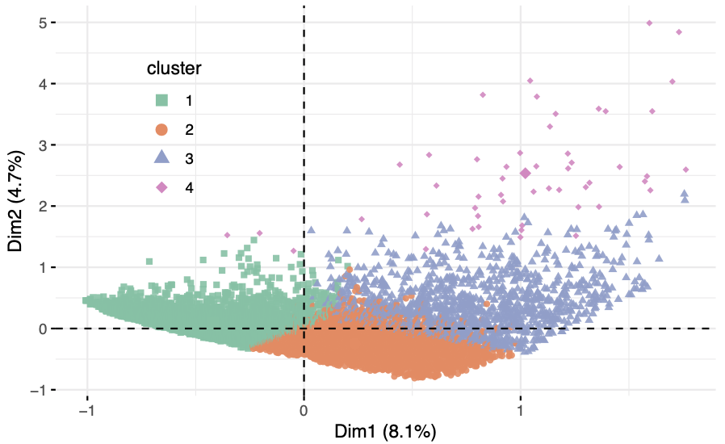
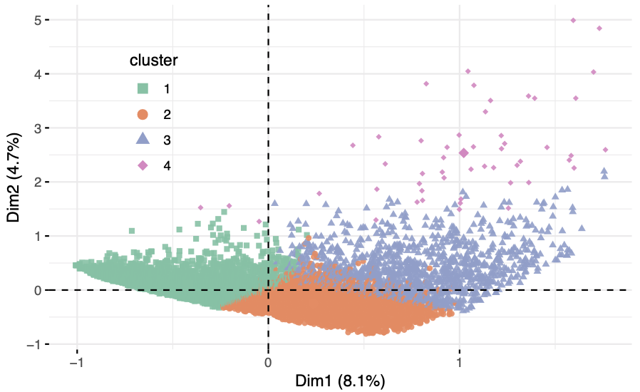
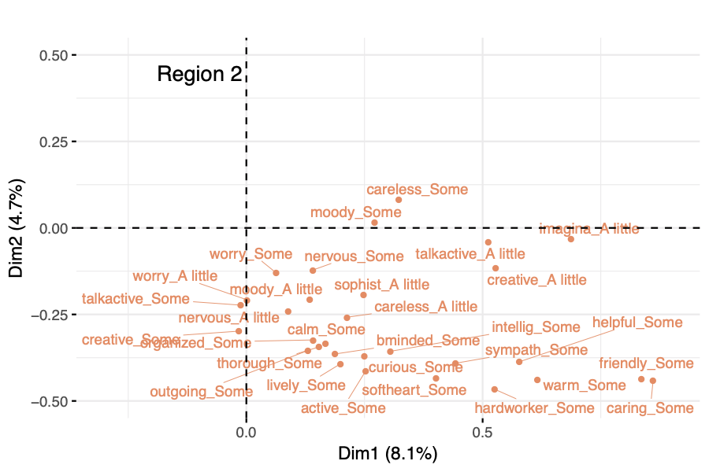
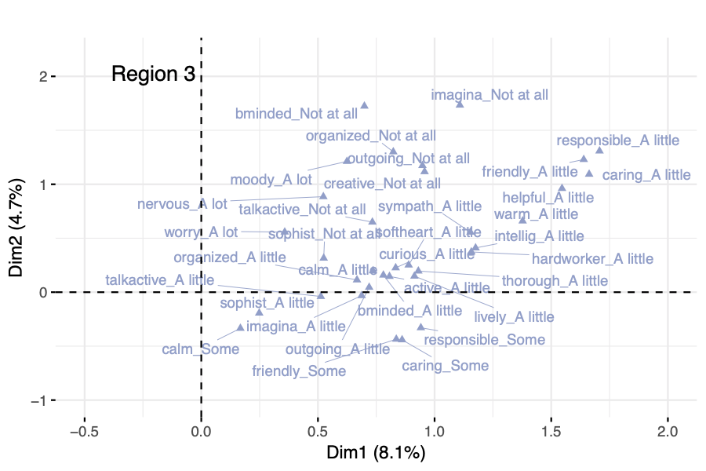
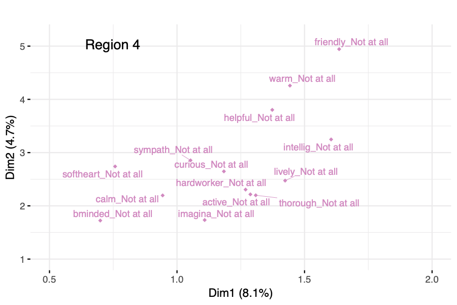
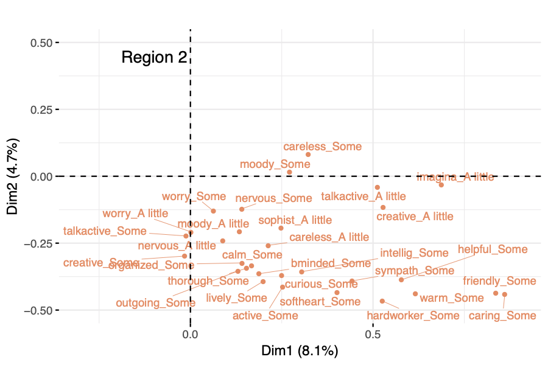
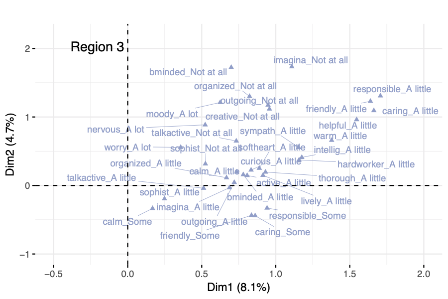
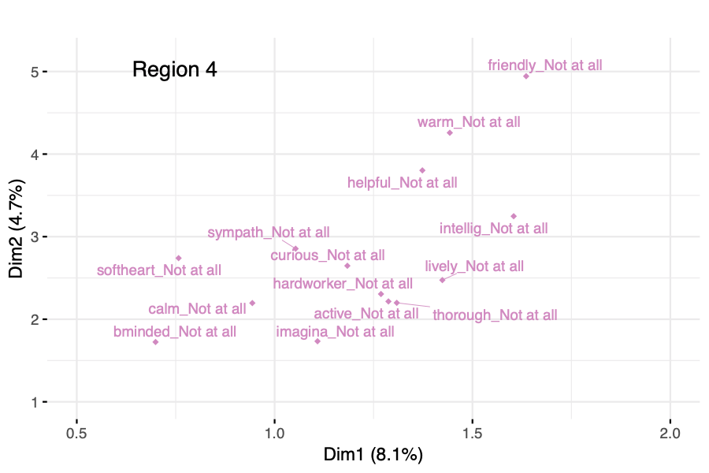

Unsupervised Learning on the Health and Retirement Study using Geometric Data Analysis
Reinaldo Sanchez-Arias1, Roberto Williams Batista1
1 Department of Data Science and Business Analytics, Florida Polytechnic University

Introduction
The main focus of this work is to show the ability of geometric data analysis techniques in discovering response patterns in survey data where the majority of measurements result in categorical variables.
Methods
The geometric data analysis method of Multiple Correspondence Analysis (MCA) allows the construction of a lower dimensional space that captures the variance in the original data, and in which both variables and individuals can be projected to explore patterns, validate hypotheses, and better understand the association among the observed data. MCA is an unsupervised learning algorithm under the framework of Geometric Data Analysis (GDA), in which the elements of two sets indexing the entries of the data table become points in a geometric space and define two clouds of points: a cloud of categories and a cloud of individuals (Figure 1). The distance between individual points is a reflection of the dissimilarity between response patterns of individuals, and both resulting clouds are on the same distance scale (Le Roux and Rouanet 2010).
The lower dimensional representation is obtained by determining the closest plane to the points in terms of weighted least-squared distance, and then projecting the points onto the plane for visualization and interpretation. The solution can be obtained compactly and neatly using the generalized singular value decomposition (SVD) of the data matrix.
Figure 1: MCA idea
The squared distance between two respondents is calculated using the variables for which each had chosen different categories:
\[\begin{equation} \begin{aligned}[b] \label{eq:distInd} d^2(i, i^{\prime}) &= \frac{1}{Q} \sum_{k\in K} \frac{(\delta_{ik} - \delta_{i^{\prime}k})^2}{f_k} \end{aligned} \end{equation}\] where \(\delta_{ik} = 1\) if \(i\) has chosen \(k\) and \(0\) otherwise, and \(f_k\) is the relative frequency of respondents who chose category \(k\). Notice that the smaller the frequencies of disagreement categories, the greater the distance between individuals. The set of all distances between individuals determines the cloud of individuals consisting of \(N\) points in a space with dimensionality \(L\leq K - Q\) (it is assumed here that \(N > L\)). Additionally, if respondent \(i\) chooses infrequent categories, then the point \(M^i\) representing individual \(i\) is far from the mean center of the cloud \(G\). The squared distance from point \(M^i\) to \(G\) is given by
\[\begin{equation} \begin{aligned}[b] \label{eq:distGM} (GM^i)^2 &= \left( \frac{1}{Q} \sum_{k\in K} \frac{\delta_{ik}}{f_k} \right) -1 \end{aligned} \end{equation}\]
In the cloud of categories, a weighted cloud of \(K\) points, category \(k\) is denoted by point \(M^k\) with weight \(n_k\): For each question, the sum of the weights of category points is \(N\), and the relative weight \(p_k\) of point \(M^k\) is simply \(p_k = f_k=Q\).
The HRS Dataset
Created in 1990 and launched in 1992 by the National Institute on Aging (NIA) and Social Security Administration, the Health and Retirement Study (HRS) surveys collect every two years of data from more than 22,000 Americans over 50 years old. It is the first longitudinal study of Americans approaching the economic and health aspects in the same survey and being the largest nationally representative multidisciplinary panel study of Americans aged 50 and older. The study was created and maintained by the Institute for Social Research (ISR) Survey Research Center (SRC) at the University of Michigan.
This study uses the following data products: HRS Core Cognition Section (D), HRS Left-Behind Questionnaires Section LB, and the RAND HRS Longitudinal File 2014 (V2). All the data used in this work was related to the survey waves of 2006, 2008, 2010 and 2012.
Results and Discussion
MCA was performed on a combined dataset from respondents of the 2008 and 2010 waves. Notice that the participants of the 2008 survey are different than those from the 2010 survey. The clouds patterns for every wave were examined to confirm that the overall geometric representations were similar regardless of the number of participants in each wave, or the year in which the survey responses were collected.
| Variable | Dim 1 | Dim 2 | Dim 3 | Dim 4 |
|---|---|---|---|---|
| sophisticated Not at all | 0.52 | 0.32 | 0.03 | -0.14 |
| imaginative A lot | -0.75 | 0.23 | -0.20 | 0.04 |
| creative A lot | -0.72 | 0.25 | -0.23 | 0.03 |
| caring A little | 1.66 | 1.09 | -1.90 | 0.58 |
| talkactive A lot | -0.53 | 0.22 | -0.03 | -0.35 |
| friendly A little | 1.64 | 1.23 | -1.73 | 0.19 |
| careless Some | 0.32 | 0.08 | 0.10 | -0.68 |
| responsible A little | 1.71 | 1.31 | -1.53 | -0.18 |
| responsible Some | 0.94 | -0.33 | 0.07 | -0.06 |
| nervous Not at all | -0.31 | 0.22 | -0.19 | 0.81 |
| worry Not at all | -0.34 | 0.39 | -0.27 | 1.11 |
| moody Some | 0.27 | 0.02 | 0.07 | -0.70 |
| Axes | 1 | 2 | 3 | 4 | 5 | 6 |
|---|---|---|---|---|---|---|
| Eigenvalue \(( \lambda_l )\) | 0.244 | 0.142 | 0.086 | 0.085 | 0.070 | 0.063 |
| Modified variance rate \(( \tau_l )\) | 0.688 | 0.180 | 0.039 | 0.038 | 0.019 | 0.012 |
In this work, the R packages dplyr (Wickham et al. 2018) was used for data wrangling, and the haven package (Wickham and Miller 2018) for importing data. The MCA algorithm used in this study corresponds to the implementation of the algorithm available in the FactoMineR package (Lê et al. 2008), that includes a collection of methods for multivariate data analysis.
Clustering
Geometric data analysis methods have the potential to be used as a pre-processing step for clustering, given the representation in a lower dimensional space provided by the principal component technique of choice. In this work, a hierarchical clustering algorithm is performed using the coordinates of each respondent in the lower dimensional space generated by the MCA procedure.
The findings of this hierarchical clustering confirm a natural grouping for the participants of the survey: the tendency of survey respondent to use the levels of agreement with the different questions that are part of the questionnaire, namely, “a lot”, “not at all”, “some” and “a little”. These levels of agreements are well separated in distinct regions within the plane of the first 2 principal dimensions.
The four regions shown in (Figure 3), express consistency category levels of the variables related to the personality scale (Lachman and Weaver 1997) supplied by the HRS Core LB dataset. The individuals present in Region 1 have an open personality and actively seek for new experiences, while individuals in Region 3 and 4 do not exhibit this characteristic, holding all the low levels of this perception which is defined by a “Not at all” response in most cases. Similarly, the aspect of conscientiousness is a substantial characteristic for individuals in Region 1, and its weakest trace is found in individuals located in Regions 3 and 4.
 

Figure 2: Hierarchical Clustering
 

Figure 3: Regions
Conclusions
The use of unsupervised techniques presented in this work represents an opportunity to extract valuable insights from longitudinal datasets like the one made available by the US Health and Retirement Study. MCA allows for new interpretations and discovery of patterns that take advantage of the qualitative nature of the data collected from survey respondents. The hierarchical clustering technique applied to the low dimensional representation of participants, provided by the MCA method, suggested a reasonable separation of the respondent profile as characterized by a personality scale. Results provided by this approach may be used to explore other areas that have yet to be captured using the items in the questionnaires, helping in the design of the survey and sampling procedure, and allowing for correlation studies with other physical and mental health indicators.
Acknowledgements
The HRS (Health and Retirement Study) is sponsored by the National Institute on Aging (grant number NIA U01AG009740) and is conducted by the University of Michigan. The HRS has been approved by the Institutional Review Board at the University of Michigan. The HRS obtains informed verbal consent from voluntary participants and follows strict procedures to protect study participants from disclosure (including maintaining a Federal Certificate of Confidentiality). The public data, made available to registered researchers and used in this study, is de-identified.
References
Lachman, Margie E, and Suzanne L Weaver. 1997. “The Midlife Development Inventory (MIDI) Personality Scales: Scale Construction and Scoring.” Waltham, MA: Brandeis University, 1–9.
Le Roux, Brigitte, and Henry Rouanet. 2010. Multiple Correspondence Analysis. Vol. 163. Sage.
Lê, Sébastien, Julie Josse, François Husson, and others. 2008. “FactoMineR: An R Package for Multivariate Analysis.” Journal of Statistical Software 25 (1). Los Angeles: 1–18.
Wickham, Hadley, Romain Francois, Lionel Henry, and Kirill Müller. 2018. Dplyr: A Grammar of Data Manipulation. https://CRAN.R-project.org/package=dplyr.
Wickham, Hadley, and Evan Miller. 2018. “Haven: Import and Export SPSS, STATA and SAS Files.” R Package Version 1 (0).